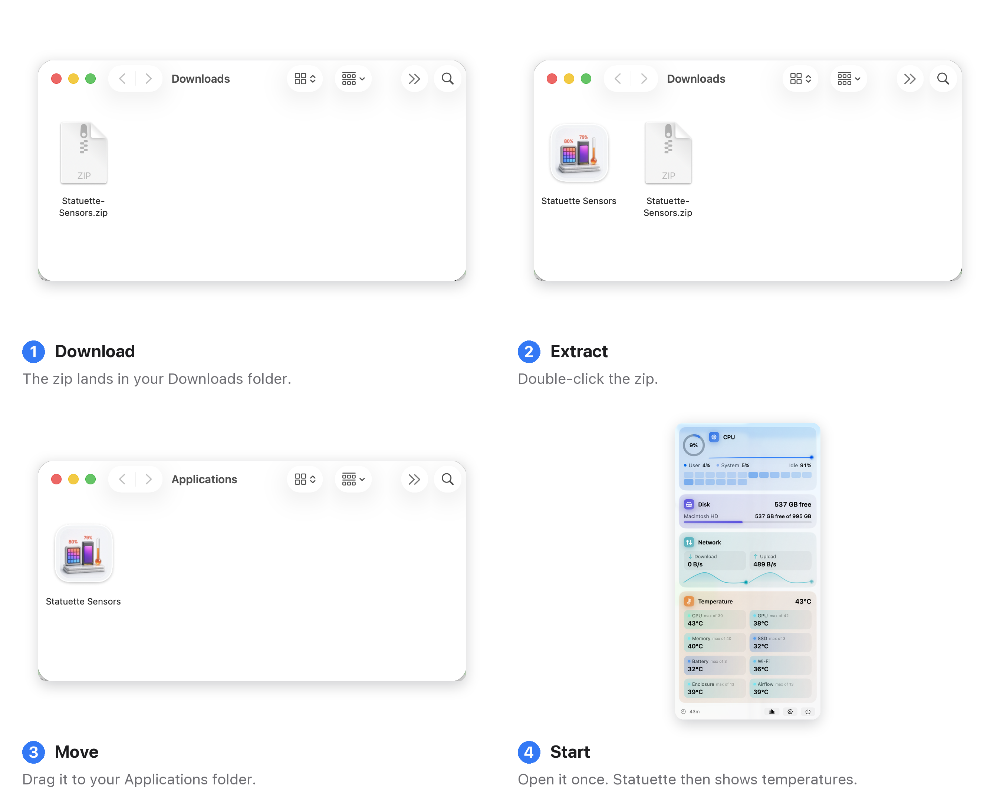

Statuette Sensors
درجات الحرارة وسرعات المراوح لنسخة App Store من Statuette.
لماذا مساعد منفصل؟
تعمل تطبيقات Mac App Store داخل App Sandbox من Apple، وهو لا يسمح بقراءة مستشعرات العتاد في جهاز Mac. أما Statuette Sensors فتطبيق مرافق صغير ومجاني يعمل خارج بيئة العزل، فيقرأ المستشعرات ويشاركها مع Statuette. بدونه يظل Statuette يعرض المعالج والذاكرة والقرص والشبكة والبطارية؛ ومعه تمتلئ بطاقتا «الحرارة» و«المراوح».
لا نافذة له ولا عنصر في شريط القوائم، ويستخدم أقل بكثير من 1٪ من المعالج، ويقرأ المستشعرات فقط، ولا يقترب من الشبكة أبدًا.
التثبيت

- فك ضغط الملف الذي نزّلته واسحب Statuette Sensors إلى مجلد التطبيقات.
- افتحه مرة واحدة. لن يظهر شيء: فهو يبدأ في الخلفية ويضيف نفسه إلى عناصر الدخول ليبقى متاحًا دائمًا.
- افتح Statuette. تظهر بطاقتا «الحرارة» و«المراوح» خلال بضع ثوانٍ.
التطبيق موقّع بـ Developer ID وموثَّق من Apple، لذا يُفتح دون تنبيهات أمان.
الإزالة
أنهِه واسحبه إلى سلة المهملات. ولمنعه من الفتح عند تسجيل الدخول، شغّل أولًا في الوحدة الطرفية:
"/Applications/Statuette Sensors.app/Contents/MacOS/StatuetteSensors" --login-item=off
أو أزِله من إعدادات النظام › عام › عناصر الدخول والملحقات.
تحقّق من الملف الذي نزّلته
يذكر كل إصدار مجموع التحقق SHA-256 لملف zip الخاص به. قارِنه بناتج:
shasum -a 256 ~/Downloads/Statuette-Sensors.zip